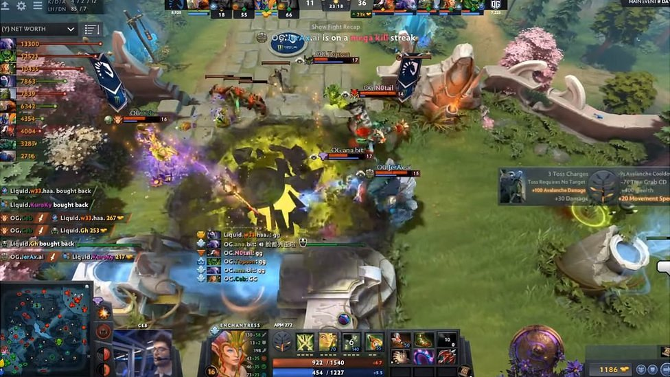
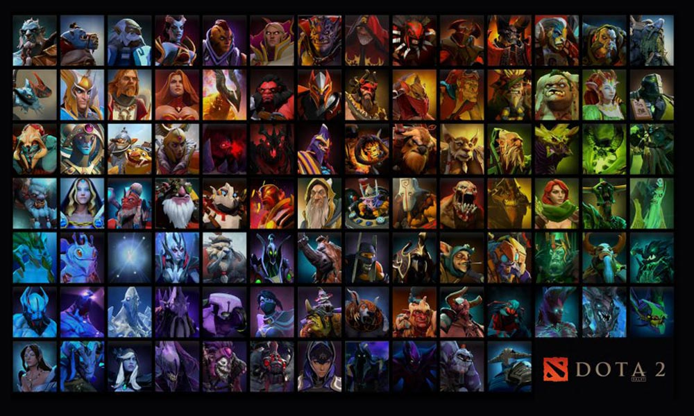

- Home
- About us
- Artist
- Movie
- Games
DOTA 2

Dota 2 is a multiplayer online battle arena (MOBA) video game in which two teams of five players compete to collectively destroy a large structure defended by the opposing team known as the "Ancient", whilst defending their own. As in Defense of the Ancients, the game is controlled using standard real-time strategy controls, and is presented on a single map in a three-dimensional isometric perspective.Ten players each control one of the game's 122 playable characters, known as "heroes", with each having their own design, strengths, and weaknesses. Heroes are divided into two primary roles, known as the core and support.

The Dota series began in 2003 with Defense of the Ancients (DotA)—a mod for Blizzard Entertainment's Warcraft III: Reign of Chaos—created by the pseudonymous designer "Eul". An expansion pack for Warcraft III, The Frozen Throne, was released later that year; a series of Defense of the Ancients clone mods for the new game competed for popularity. DotA: Allstars by Steve Feak was the most successful, and Feak, with his friend Steve Mescon, created the official Defense of the Ancients community website and the holding company DotA-Allstars, LLC. When Feak retired from DotA: Allstars in 2005, a friend, under the pseudonym IceFrog, became its lead designer. By the late 2000s, Defense of the Ancients became one of the most popular mods worldwide, as well as a prominent esports game. IceFrog and Mescon later had a falling out in May 2009, which prompted the former to establish a new community website at playdota.com.

In June 2015, Valve announced that the entirety of Dota 2 would be ported over to their Source 2 game engine in an update called Dota 2 Reborn. Reborn was first released as an opt-in beta update that same month, and officially replaced the original client in September 2015, making it the first game to use the engine. Reborn included a new user interface framework design, ability for custom game modes created by the community, and the full replacement of the original Source engine with Source 2. Largely attributed to technical difficulties players experienced with the update, the global player base experienced a sharp drop of approximately sixteen percent the month following its release. However, after various updates and patches, over a million concurrent players were playing again by the beginning of 2016, with that number being the largest in nearly a year. The move to Source 2 also allowed the use of the Vulkan graphics API, released as an optional feature in May 2016, making Dota 2 one of the first games to use it.
- Artist